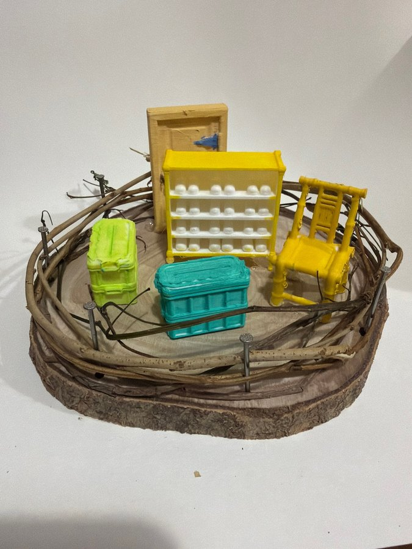

本網站為藝術科技項目之詮釋性預測（築巢 Weaving Home 藝術詮釋），並非心理／臨床診斷。


修正頂視圖將後方直立物標作黃色門，中央黃色多層架標作鞋架，架上放有多對白鞋；右邊係黃色竹椅，左前係淺綠收納箱，前方係湖水藍收納箱。相片大致支持呢個佈局，但後方門板較接近木黃色，兩個箱亦因光線同塗料紋理而有色差。圖中省略咗外圈枝條、釘同物件立體厚度。
巢嘅頂視圖
修正頂視圖將後方直立物標作黃色門，中央黃色多層架標作鞋架，架上放有多對白鞋；右邊係黃色竹椅，左前係淺綠收納箱，前方係湖水藍收納箱。相片大致支持呢個佈局，但後方門板較接近木黃色，兩個箱亦因光線同塗料紋理而有色差。圖中省略咗外圈枝條、釘同物件立體厚度。
屋企嘅人
呢個巢將座位、鞋架、門同收納箱放入同一個緊密空間，似一個以「返屋企、放低物件、坐低」為主題嘅生活入口。只有一張椅唔代表獨居，而多對小鞋亦唔能直接等同多人家庭；佢哋更可能係模型語彙，用嚟表達出入同整理。藝術上，屋企嘅人被呈現成會使用共享收納、亦需要一個固定落腳位嘅不具名角色。
性格
黃色、淺綠同湖水藍形成明亮而清楚嘅色塊，鞋架上白色小物又排列成行，令作品有直接、重分類同鍾意鮮色嘅視覺性格。竹椅造型較細緻，箱面就保留厚重筆觸；規整家具同粗糙枝圈並置，帶出既想整齊、又接受材料原貌嘅手作感。呢個只係作品氣質，唔係真實人格診斷。
動機
場景似乎想將家最實際嘅幾個動作集中展示：由門進入，把鞋放上架，把物件收進箱，再坐到椅上。所有家具都朝向中央或靠近中央，外圈枝條就將呢套日常程序包起。藝術上，創作動機可理解為替零散日用品安排固定位置，令一個細小空間仍然有入口、收納同休息嘅秩序。
需求
作品最清楚表達嘅係出入動線、分類收納同個人座位。高身鞋架善用垂直空間，兩個有蓋箱提供封閉式存放，門界定入口，竹椅就提供停留位置；木片底同枝條外圈承托並保護全組家具。呢啲係依可見功能作出嘅藝術解讀，唔足以證明住戶有搬遷、囤積或任何特定生活狀況。
經歷
相片顯示家具經反覆上色，箱蓋、架腳同椅背都有明顯塑形同塗層痕跡；外圍則以枝條穿插喺金屬釘之間。作品由硬木、天然枝、模型家具同顏料組成，似一段將不同來源物料重新安排嘅製作經驗。可以聯想到整理同重組，但冇可見證據支持任何特定住屋史、職業或家庭背景。
證據摘要
| 物件 | 推論 |
|---|---|
| 後方木黃色直立門板 | 標示入口或由外到內嘅轉換位置。 |
| 黃色多層鞋架同成排白色小鞋 | 具體呈現分類、出入同垂直收納。 |
| 右邊黃色竹椅 | 提供一個清楚嘅坐下或停留位置。 |
| 左前淺綠箱同前方湖水藍箱 | 兩個有蓋容器強調封閉式收藏。 |
| 木片基座、枝條外圈同金屬釘 | 以天然材料建立承托同邊界。 |
信心同限制
對家具數量、位置、形狀同主要顏色有高信心；對白色小物是否全部係鞋，以及門板實際用途，主要依修正頂視圖標示。相片同圖只有色調及簡化程度差異，未見重大衝突。所有關於人物、性格、動機同經歷嘅內容均屬藝術詮釋，非診斷或事實認定。